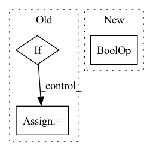

Pattern ID :1763
Before Change
pad_l = pad_t = pad_r = pad_b = 0
Ho, Wo = H, W
if N <= num_tokens:
if self.kernel_size > W:
pad_r = self.kernel_size - W
if self.kernel_size > H:
pad_b = self.kernel_size - H
x = pad(x, (0, 0, pad_l, pad_r, pad_t, pad_b))After Change
B, Hp, Wp, C = x.shape
H, W = Hp, Wp
pad_l = pad_t = pad_r = pad_b = 0
if H < self.kernel_size or W < self.kernel_size :
pad_l = pad_t = 0
pad_r = max(0, self.window_size - W)
pad_b = max(0, self.window_size - H)In pattern: SUPERPATTERN
Frequency: 3
Non-data size: 3
Instances Fragment ID: 6885033
Project Name: shi-labs/neighborhood-attention-transformer
Commit Name: 4252f7b65813e4951d05c9918b11c9efa8e07bb7
Time: 2022-07-09
Author: alihassanijr1998@gmail.com
File Name: natten/nattencuda.py
M Class Name: NeighborhoodAttention
N Class Name: NeighborhoodAttention
M Method Name: forward(2)
N Method Name: forward(2)
M Parent Class: nn.Module
N Parent Class: nn.Module
M File Name: natten/nattencuda.py
N File Name: natten/nattencuda.py
M Start Line: 109
M End Line: 122
N Start Line: 112
N End Line: 120
Before Change
x_tc_out = x_glu
// Temporal Convolution Layer (GTU)
elif :
// Tanh(x_p + x_in) ⊙ Sigmoid(x_q)
x_gtu = torch.mul(self.tanh(x_p + x_in), self.sigmoid(x_q))
x_tc_out = x_gtu
else:
raise ValueError(f"ERROR: activation function {self.act_func} is not defined.")
After Change
x_in = self.align(x)[:, :, self.Kt - 1:, :]
x_causal_conv = self.causal_conv(x)
if self.act_func == "glu" or self.act_func == "gtu" :
x_p = x_causal_conv[:, : self.c_out, :, :]
x_q = x_causal_conv[:, -self.c_out:, :, :]
Fragment ID: 6885035
Project Name: hazdzz/stgcn
Commit Name: de050cc05a36453eafe1bf7bac60401c6561e947
Time: 2022-02-07
Author: raphaelpeo@gmail.com
File Name: model/layers.py
M Class Name: TemporalConvLayer
N Class Name: TemporalConvLayer
M Method Name: forward(2)
N Method Name: forward(2)
M Parent Class: nn.Module
N Parent Class: nn.Module
M File Name: model/layers.py
N File Name: model/layers.py
M Start Line: 93
M End Line: 159
N Start Line: 94
N End Line: 128
Before Change
def forward(self, inputs, targets):
enc_output, i_mask = None, None
if self.has_inputs:
i_mask = utils.create_pad_mask(inputs, self.src_pad_idx)
enc_output = self.encode(inputs, i_mask)
t_mask = utils.create_pad_mask(targets, self.trg_pad_idx)After Change
self.initialize()
def forward(self, padded_input, input_lengths, padded_target):
if self.feat_extractor == "emb_cnn" or self.feat_extractor == "vgg_cnn" :
padded_input = self.conv(padded_input)
// Reshaping features Fragment ID: 6885051
Project Name: qute012/kosr
Commit Name: b7d24b0d835254fd425224eba3421a3b7224e55f
Time: 2021-01-12
Author: ejrwls012@gmail.com
File Name: model/transformer/transformer.py
M Class Name: Transformer
N Class Name: Transformer
M Method Name: forward(4)
N Method Name: forward(3)
M Parent Class: nn.Module
N Parent Class: nn.Module
M File Name: model/transformer/transformer.py
N File Name: model/transformer/transformer.py
M Start Line: 19
M End Line: 28
N Start Line: 18
N End Line: 34